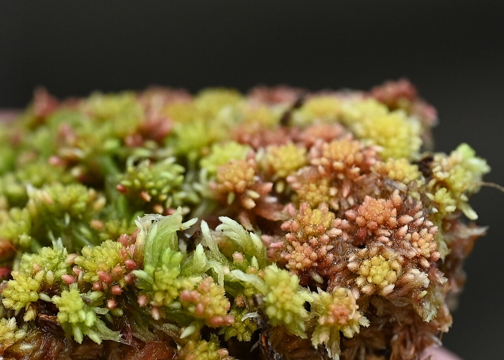
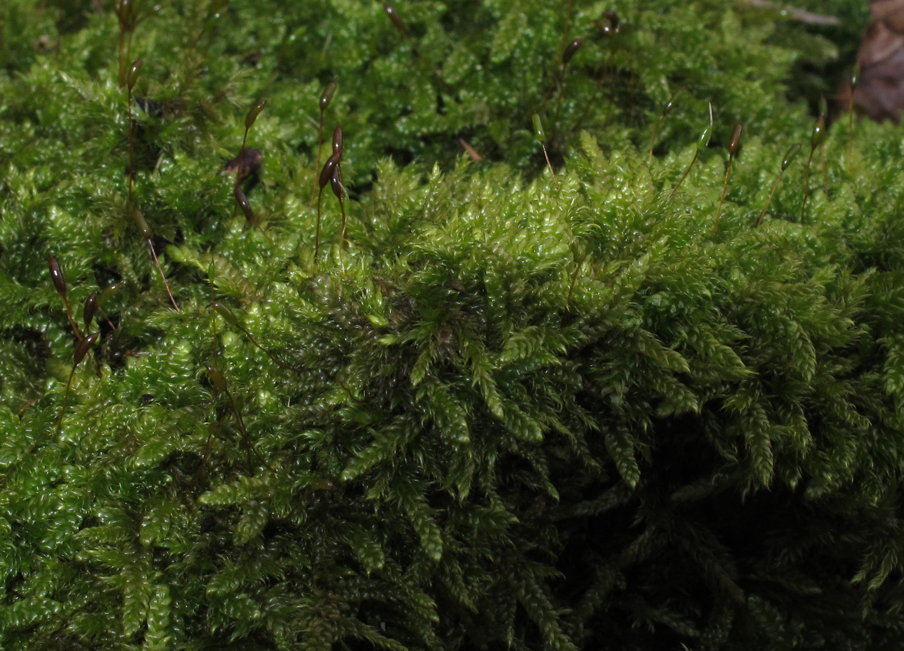
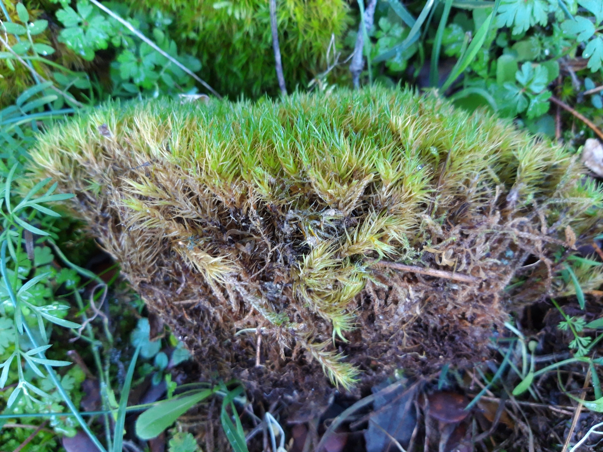
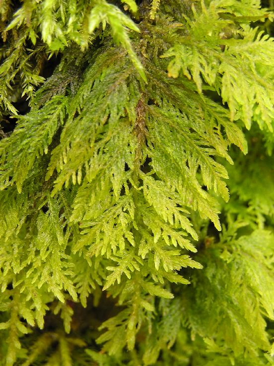

Sphagnum capillifolium
The bog mosses. They hold many times their own weight in water and slowly build the peat of moors and mires. Acid-loving and unmistakable in a spongy red-tinged hummock.
A field guide to the bryophytes
Mosses are among the oldest land plants alive. They have no roots, no flowers and no real plumbing, yet they thrive on rock, bark, brick and bare soil where almost nothing else will. Mossbank is a small, independent guide to knowing them, growing them and using them.
Start readingMosses belong to the bryophytes, a group of non-vascular plants that also includes liverworts and hornworts. Unlike the familiar garden plants, a moss has no internal vessels to pump water and nutrients about. Instead each tiny leaf, often only one cell thick, soaks up moisture directly from rain, mist and dew.
This simplicity is also their strength. A moss can dry out almost completely, sit dormant for weeks, and then green up within minutes of the next shower. That trick, called poikilohydry, lets mosses colonise places that would kill a conventional plant: the north face of a boulder, a slate roof, the mortar between paving stones.
They reproduce in two stages. The soft green cushion you see is the gametophyte. After fertilisation it raises slender stalks tipped with capsules, the sporophytes, which dry, split and scatter spores on the wind to begin again.
Four common mosses of temperate gardens, woods and walls. None is difficult to find once your eye is in.

The bog mosses. They hold many times their own weight in water and slowly build the peat of moors and mires. Acid-loving and unmistakable in a spongy red-tinged hummock.

Cypress-leaved plait moss. A flat, glossy, trailing mat seen on tree trunks, fence posts and roof tiles almost everywhere. Tolerant, tough and very common.

Broom fork-moss. Its leaves all sweep to one side as if combed by the wind, forming deep green cushions on woodland floors and acid banks.

Tamarisk moss. Three-times-branched fronds give it the look of a tiny fern. A handsome sprawler of damp, shaded woodland and stream banks.
Moss asks for the opposite of most gardening: poor soil, shade, damp and patience. Give it those and it will largely look after itself.
A living mulch that keeps roots cool and damp, suppresses weeds and finishes a bonsai or container planting with a settled, aged look.
Sphagnum and its peat store vast amounts of carbon and water. Healthy moss bogs slow floods and lock away more carbon per hectare than forest.
Dried moss has chinked log cabins, stuffed mattresses and padded shipped plants for centuries. It is light, springy and naturally antiseptic.
Sphagnum's acidity and absorbency made it a wound dressing in both world wars, gathered by the sackful when cotton ran short.
Because mosses feed straight from the air and rain, they accumulate pollutants reliably and are used to map heavy metals and air quality.
Lightweight and drought-tolerant once established, moss carpets cool buildings, soak up rain and need none of the upkeep of sedum or grass.